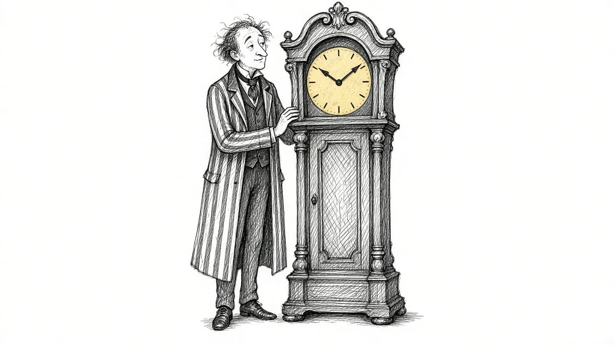
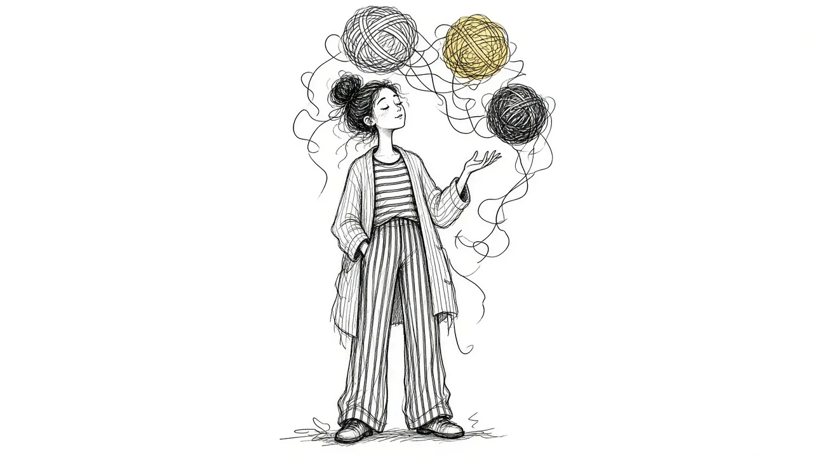
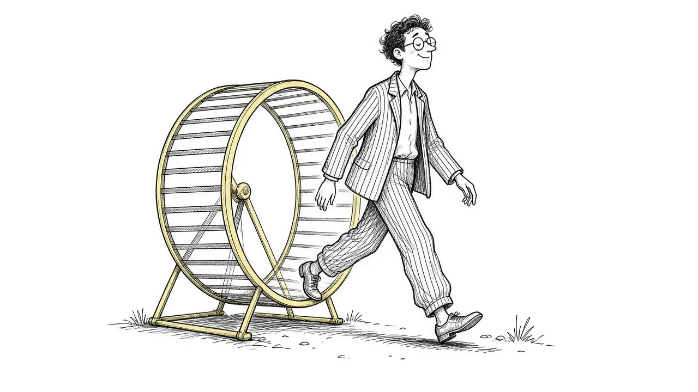

Is It Grief or Something More? Understanding Prolonged Grief

For most people, grief remains painful but becomes more bearable over time. For some, it stays so intense and consuming that it blocks their ability to live. This is now recognized as prolonged grief disorder, and it is treatable.
What prolonged grief is
Prolonged grief disorder was added to the DSM-5-TR, the main diagnostic manual used in the United States, in 2022. It describes grief that, at least a year after a loss for adults, still involves intense longing or preoccupation with the person nearly every day, along with other symptoms that seriously affect daily life.
Possible signs
- Feeling as though part of you died with them
- Marked disbelief that the death happened
- Avoiding reminders to an extreme degree
- Intense emotional pain most days
- Difficulty re-engaging with friends, work, or plans
- Feeling life is meaningless without them
- Intense loneliness or emotional numbness
What it is not
Missing someone deeply for years is not a disorder. Crying on anniversaries is not a disorder. Keeping their belongings is not a disorder. The key questions are how intense, how constant, and how impairing the grief is after a long period.
Who is at higher risk
Sudden or violent deaths, the death of a child, very close or dependent relationships, a history of depression or trauma, and limited support can all raise the risk.
Treatment works
Therapies designed for prolonged grief, sometimes called complicated grief treatment, have good research behind them. They help people both face the loss and re-engage with life. A doctor or grief counselor can help you find one.
Taking the first step
If this sounds like you, it is not a sign you loved them too much or are grieving wrong. It is a sign you deserve more support. Reach out to a professional. If you are thinking about ending your life, call or text 988 now.
This article is for general information and support. It is not medical or mental health advice. If grief has become unbearable or you are thinking about harming yourself, call or text 988 right now.
Related reading

Grief Alongside Depression and Anxiety
Grief often arrives alongside other mental health challenges. How to recognize overlap and get support for all of it.
Why Your Brain Keeps Replaying Their Last Days
Memories of the final days or moments can loop relentlessly. Here is why that happens and how to let the rest of their life back in.

Rumination in Grief: Getting Off the "What If" Wheel
Endless what-ifs and if-onlys can trap grieving people. Learn why rumination happens and gentle ways to step off the wheel.